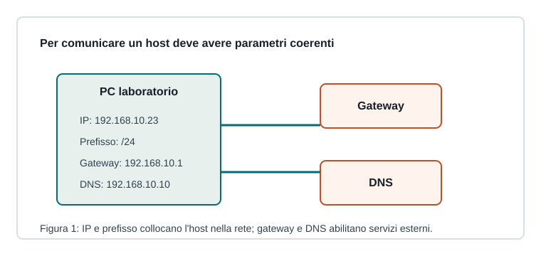

Capitoletto 3.3
Configurazione della rete
Per comunicare correttamente un host deve avere indirizzo, prefisso, gateway e DNS coerenti con la rete in cui si trova.

Parametri essenziali
L'indirizzo IP identifica l'interfaccia, il prefisso stabilisce la rete di appartenenza, il gateway predefinito porta il traffico verso reti esterne e il DNS traduce nomi in indirizzi.
| Parametro | Serve per | Esempio |
|---|---|---|
| IP | identificare l'host | 192.168.10.23 |
| Prefisso | definire la rete | /24 |
| Gateway | uscire dalla rete locale | 192.168.10.1 |
| DNS | risolvere nomi | 192.168.10.10 |
Statico o DHCP
Una configurazione statica viene inserita manualmente ed è utile per server, router, stampanti e apparati che devono mantenere sempre lo stesso indirizzo. DHCP assegna automaticamente i parametri ai client.
In una rete scolastica, di solito i PC degli studenti usano DHCP, mentre server e apparati hanno indirizzi statici o prenotazioni DHCP.
Coerenza della subnet
Due host nella stessa rete devono avere indirizzi compatibili con lo stesso prefisso. Se un PC ha IP corretto ma gateway sbagliato, può comunicare localmente ma non raggiungere Internet.
Con rete 192.168.10.0/24, gli host validi vanno in genere da 192.168.10.1 a 192.168.10.254, evitando indirizzo di rete e broadcast.
Configurare con metodo
Prima si identifica la rete, poi si assegna l'indirizzo, si imposta il gateway e infine si verifica il DNS. Ogni modifica va documentata, soprattutto se riguarda apparati condivisi.
Ripasso
Perché il gateway è necessario?
Per raggiungere destinazioni fuori dalla rete locale.
Quando conviene un indirizzo statico?
Quando il dispositivo deve essere sempre raggiungibile allo stesso indirizzo, come server o stampanti.